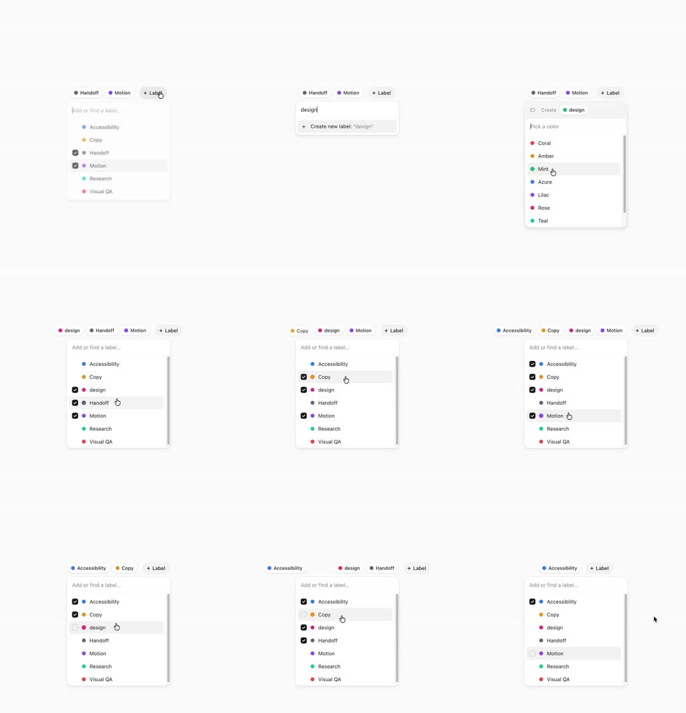

Label-picker dropdown: '+ Label' opens a menu with a search field, checkbox rows of labels with color dots, and a create flow - typing 'design' offers 'Create new label' which opens a color-pick submenu (Coral/Amber/Mint/Azure/Lilac/Rose/Teal); selected labels become chips that animate into the parent row.
Media
Frame-by-frame

0-15%
Row of label chips (Handoff, Motion) + '+ Label' button; dropdown opens below with search input 'Add or find a label...' and checkbox list (Accessibility, Copy, Handoff, Motion, Research, Visual QA) - checked ones ticked.
15-30%
Typing 'design' filters the list empty and shows '+ Create new label: design'.
30-45%
Create flow advances to a color submenu: 'Pick a color' rows with dots (Coral, Amber, Mint, Azure, Lilac, Rose, Teal), hover highlight.
45-60%
Color chosen: 'design' chip materializes in the parent row (pop-in, others shift with layout animation); list now shows design checked.
60-85%
Toggling more checkboxes: chips appear/disappear in the row in real time, unchecked chip exits with fade+shrink.
85-100%
Final state: Accessibility + design checked; dropdown closes on outside click.
Build prompt
Rebuild this flow 1:1: a label-picker dropdown with a create flow - three states inside one panel: searchable list, color-pick submenu, and the parent chip row that live-syncs.
## Integration
Integration: stack-agnostic spec - every value is plain layout/typography/CSS; any motion is described as duration + curve that maps to any animation library.
## Screen 1 - Label list
Dropdown below a "+ Label" button: search input ("Add or find a label...", focused on open), checkbox rows (Accessibility, Copy, Handoff, Motion, Research, Visual QA) each with a color dot; checked rows ticked. Typing filters instantly; no-match reveals "+ Create new label: design".
## Screen 2 - Color submenu
Same panel, content slides over: "Pick a color" rows with dots (Coral, Amber, Mint, Azure, Lilac, Rose, Teal), hover highlight.
## Screen 3 - Parent row (always visible)
Chip row above the dropdown: selected labels are chips (Handoff, Motion); created labels join them ("design").
## Transitions
- Dropdown opens: opacity 0 -> 1, scale 0.96 -> 1 origin-top, 180ms ease-out.
- Create -> submenu: slides over within the same panel bounds (x 8 -> 0, 200ms).
- Color chosen: "design" chip materializes in the parent row (pop-in 150ms spring); sibling chips shift with layout animation; list shows design checked.
- Checkbox toggles: chips enter (pop 150ms) / exit (fade+shrink 150ms) in the row in real time.
- Outside click closes (150ms fade).
## Calibration
- 180/200/150ms micro band throughout - snappy, never bouncy except the chip pop.
- Chips animate with layout so the row reflows organically.
## Reduced motion
All transitions 150ms opacity only; chips appear without pop.
## Don't miss
- Chip state and checkbox state are one source of truth, synced both directions in real time.
- The create item appears only when the filter has no match, labeled with the typed text.
- The submenu lives within the same panel bounds - no second floating popover.
Mechanics
trigger
'+ Label' click; type to filter; create flow; checkbox toggles